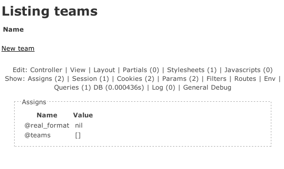

rails_consoletasks/ has been deprecated. Rake tasks go in lib/tasks/ now.
module Typus
class Railtie < ::Rails::Railtie
rake_tasks do
namespace :typus do
desc "Install acts_as_list, acts_as_tree and paperclip."
task :misc do
# ...
end
end
end
end
end
Replicates in a lot of the Rubigen API.
class FormtasticGenerator < Rails::Generator::Base
def manifest
record do |m|
m.directory File.join('config', 'initializers')
m.template 'formtastic.rb', File.join('config', 'initializers', 'formtastic.rb')
m.directory File.join('public', 'stylesheets')
m.template 'formtastic.css', File.join('public', 'stylesheets', 'formtastic.css')
m.template 'formtastic_changes.css', File.join('public', 'stylesheets', 'formtastic_changes.css')
end
end
end
require 'rails/generators'
class FormtasticGenerator < Rails::Generators::Base
def install_formtastic
template File.join('config', 'initializers', 'formtastic.rb')
template File.join('public', 'stylesheets', 'formtastic.css')
template File.join('public', 'stylesheets', 'formtastic_changes.css')
end
end
class FormGenerator < Rails::Generator::NamedBase
default_options :haml => false,
:partial => false
def initialize(runtime_args, runtime_options = {})
base_name, @controller_class_path = extract_modules(@name.pluralize)
# ...
end
def manifest
record do |m|
if options[:partial]
# ...
end
end
end
end
class FormGenerator < Rails::Generators::NamedBase
class_option :haml, :type => :boolean,
:desc => 'Generate HAML instead of ERB.'
class_option :partial, :type => :boolean,
:desc => 'Generate a form partial in the model views path, i.e. "_form.html.erb" or _form.html.haml".'
class_option :controller, :type => :string, :banner => 'PATH',
:desc => 'Generate for custom controller/view path - in case model and controller namespace is different, i.e. "admin/posts".'
def create_form
base_name, controller_class_path = extract_modules(name.pluralize)
if options[:partial]
# ...
end
end
end
Like tasks, generators have moved from generators/ to lib/generators/.
All the RAILS_* constants are now deprecated.
Move to using the Rails object:
Rails.envRails.rootActionView::Base.send :include, Formtastic::SemanticFormHelper
ActionView::Base.send :include, Formtastic::LayoutHelper
ActiveSupport.on_load(:action_view) do
include Formtastic::SemanticFormHelper
include Formtastic::LayoutHelper
end
Whatever callback you use, it gives you the context of ActionWhatever::Base.
before_configurationbefore_initializebefore_eager_loadafter_initializeactive_record, action_controller, action_view, action_mailer, i18nYou can execute whatever code you need to inside these.
Guesswork, blood, and hacks
rails_consoleWritten by José Valim.

Touches all parts of Rails.
I’d upgrade this plugin as a good example.
~/Projects/railsconf_presentation/test3 [master] > rails server
=> Booting WEBrick
=> Rails 3.0.0.beta3 application starting in development on http://0.0.0.0:3000
Exiting
/home/cnixon/.rvm/gems/ruby-1.9.2-preview3/gems/activesupport-3.0.0.beta3/lib/active_support/core_ext/module/aliasing.rb:31:in `alias_method': undefined method `clean_backtrace' for class `Exception' (NameError)
In the plugin rails_footnotes:
module Footnotes::Extensions::Exception
def self.included(base)
base.class_eval do
alias_method_chain :clean_backtrace, :links
end
end
# ...
def clean_backtrace_with_links
# ...
end
end
Exception.send :include, Footnotes::Extensions::Exception
A problem: Exception doesn’t have a clean_backtrace method in Rails 3.